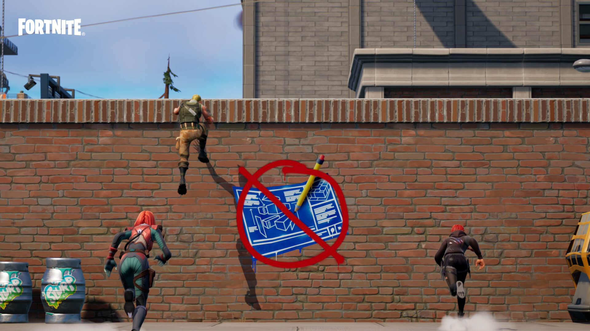

Fortnite
o que é esse jogo
Fortnite é um mundo de muitas experiências. Entre na Ilha e na competição para ser o último jogador ou equipe sobrevivente. Crie uma Ilha com suas próprias regras, jogue com amigos nas Ilhas criadas por você e pela comunidade ou salve o mundo ao enfrentar hordas de monstros em equipe.
Jeitos de jogar fotnite
O Fortnite traz diversas experiências, algumas feitas por criadores da comunidade, como os jogos do Modo Criativo, e outras pela Epic Games, como o Battle Royale, a Construção Zero (Battle Royale sem construções) e o Salve o Mundo.
Battle Royale
No Battle Royale do Fortnite, salte do Ônibus de Batalha e pouse na Ilha para entrar na batalha e tentar ser o último sobrevivente. Ou forme equipe com amigos e outros jogadores para durar mais que as outras equipes. Use o poder da madeira, da pedra e do metal para construir estruturas que vão ajudar você na batalha. Estamos sempre adicionando alguma novidade ao Battle Royale do Fortnite, incluindo novos itens, armas, veículos, modos, eventos especiais e "Temporadas". Cada nova Temporada modifica a Ilha com um tema diferente, como a dominação dos agentes secretos e o grande dilúvio.

Construção Zero
A Construção Zero do Fortnite testa sua habilidade com armas e itens e sua mobilidade. É uma experiência muito parecida com o Battle Royale , mas sem as construções. Para se proteger, os jogadores podem utilizar o Sobrescudo recarregável. Encare a luta e parta para o ataque!
